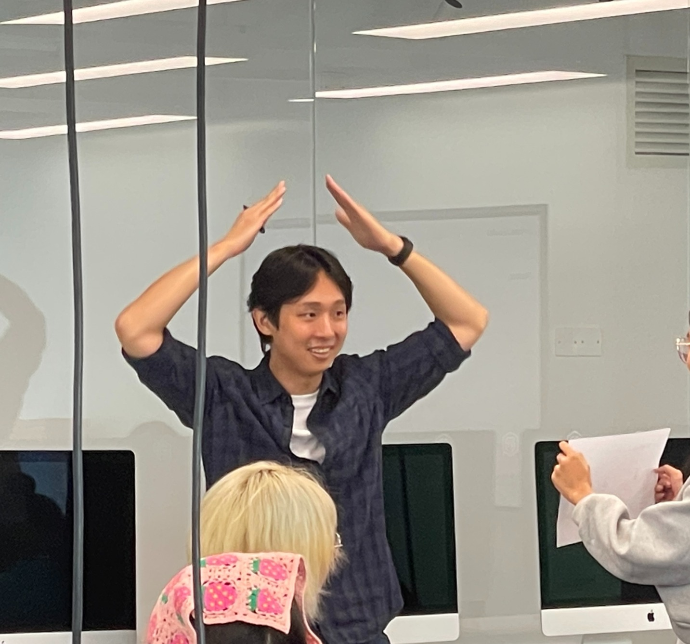

Seungwoo Je
Assistant Professor
My name is Seungwoo Je (Korean: 제승우; Chinese: 诸胜宇), and I am an Assistant Professor in the School of Design at Southern University of Science and Technology (SUSTech), where I direct the Immersive Design Research Group. I also serve as an adjunct professor at the Institute for Startup KAIST (ISK) at KAIST.
I was selected as a JSPS Invitational Fellow and conducted research at the University of Tokyo. I received my Ph.D. in Industrial Design from KAIST in 2022, advised by Prof. Andrea Bianchi, after receiving my M.S. in 2018 and B.S. in 2016, both in Industrial Design from KAIST.
My research focuses on Human Computer Interaction, VR/AR/MR, haptics, multisensory interaction, embodied interfaces, shape changing displays, and tangible data visualization. I have published at major venues including ACM CHI, UIST, DIS, IEEE ISMAR, TEI, IEEE ToH, TVCG, IJHCS, and IJHCI.
I have served as a committee member and organizer for CHI, UIST, DIS, TEI, IEEE World Haptics, ISMAR, SIGGRAPH Asia Emerging Technologies, Augmented Humans, and the Scalable HCI Symposium.
I am always actively looking for exceptional students/researchers. Check this link.
seungwoo (at) sustech.edu.cn
Professional Service
Board member, Korean Society of Design Science (KSDS, '23-)
Judge, KOREA INTERNATIONAL DESIGN AWARD ('23-'25)
Applied Makers, Chaihuo Makerspace
Committee and Organizing Roles
IEEE World Haptics '23 Program Committee, Associate Editor
IEEE World Haptics '25 Student Innovation Challenges, Co Chair
IEEE ISMAR '25 Web, Co Chair
ACM UIST '24, '25, '26 Papers Program Committee, Associate Chair
ACM UIST '25 Student Innovation Contest, Co Chair
ACM CHI '24, '25, '26, '27 Papers Program Committee, Associate Chair
ACM CHI '21, '22, '23 Late Breaking Work Program Committee, Associate Chair
ACM DIS '25 Papers Program Committee, Associate Chair
ACM CHI PLAY '21, '22, '23 Work in Progress Committee, Associate Chair
ACM ISWC '24, '26 Technical Program Committee
ACM TEI '22 Work in Progress Program Committee
ACM SIGGRAPH Asia '22, '23, '24, '25, '26 Emerging Technologies Committee
ACM ISS '19 Poster Committee
Augmented Humans '25, '26 Program Committee
Scalable HCI Symposium '24, '25 General Chair
GBA Pre CHI Forum '24 Publicity Chairs
Invited Reviewer
ACM CHI, ACM UIST, ACM DIS, ACM TEI, ACM MobileHCI, ACM ISWC, ACM VRST, ACM SIGGRAPH Asia E tech, ACM CHI PLAY, ACM ISS, IEEE VR, IEEE WHC, IEEE Haptics Symposium, Eurohaptics, IASDR
ACM on Interactive, Mobile, Wearable and Ubiquitous Technologies; IEEE Transactions on Haptics; IEEE Transactions on Visualization and Computer Graphics (TVCG); International Journal of Human Computer Interaction; International Journal of Human Computer Studies; Behaviour & Information Technology; Advanced Intelligent Systems; Advanced Science; Archives of Design Research.
Special Recognitions for Outstanding Reviews: ACM CHI '19, '21, '23, '24, '25; ACM UIST '25.